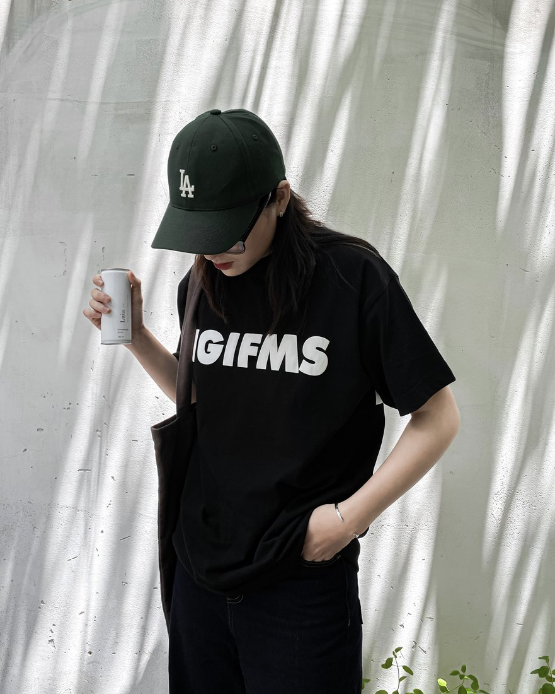

About
A multidisciplinary designer, artist and brand builder. I like work that feels calm on the surface and rigorous underneath — where every visual choice can be traced back to a person, a problem, or a business goal.

My story
I'm a design student at SAIT in Calgary, and a solo entrepreneur running print-on-demand and e-commerce stores on Amazon and other marketplaces. Building and selling my own products taught me something school can't: a brand only works when design, customer experience and business all pull in the same direction.
So I design as a strategist as much as a maker. Before choosing a colour or a logo, I ask who it's for, what it's competing against, and what it needs to make someone feel. That habit shows up across everything — a florist's identity, a student app, a fashion label, or my own stores.
Lately I've been building systems, automation and AI workflows to run my stores more efficiently — because good design and good operations are the same discipline at different scales.
Based in
Calgary, Canada
Studying
Design @ SAIT
Also running
POD & E-commerce stores
Personality
Magnetic · Airy · Yielding
What I do
How I work
I believe a portfolio piece should never just say “here is a logo I made.” It should answer five questions: What was the problem? What was my role? Why these decisions? What was the outcome? And why does it matter to the business?
That framework keeps my work honest and keeps clients confident — they always understand the why, not just the what.
See it in the work →